01
01
Heart Of Gold
Johnny Cash – Unearthed (2003)
orig. Neil Young
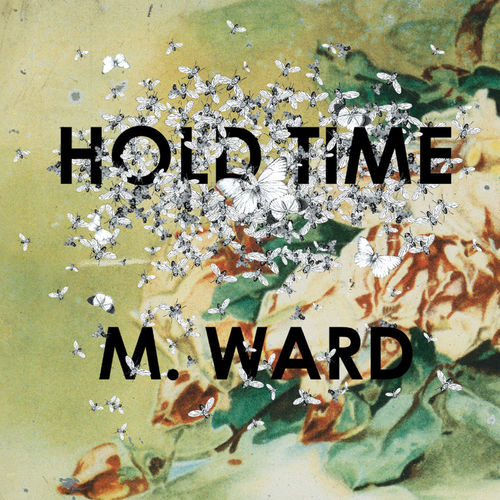
02Rave On
M. Ward – Hold Time (2009)
orig. Sonny West / Buddy Holly
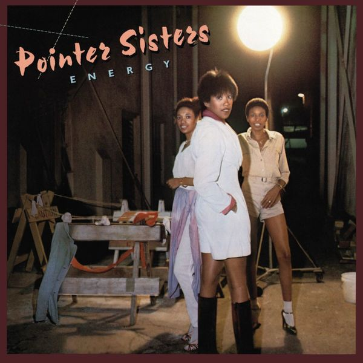
03Dirty Work
The Pointer Sisters – Energy (2010)
orig. Steely Dan
 04
04
Peng! 33
Iron & Wine – Around the Well (2009)
orig. Stereolab
 05
05
Peng! 33
Pia Fraus – Stereolab in, Metronomic Underground Versions (2017)
orig. Stereolab
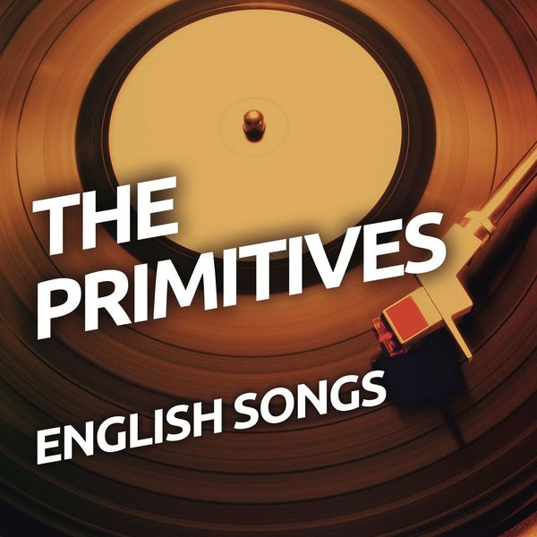
06Gira Gira (Reach Out, I'll Be There)
The Primitives – English Songs (2016)
orig. The Four Tops
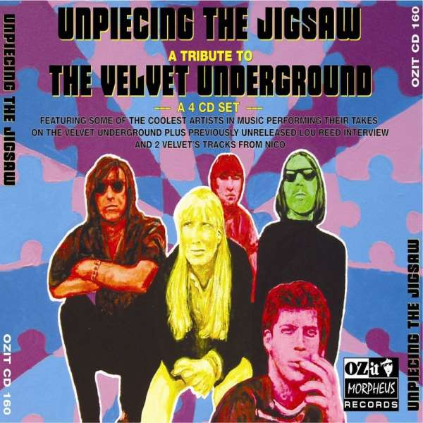
07I Heard Her Call My Name
Half Japanese – Unpiecing the Jigsaw - A Tribute to The Velvet Underground (2009)
orig. The Velvet Underground
 08
08
PS I love you
AKA Gelbart – Please Please Me (2017)
orig. The Beatles
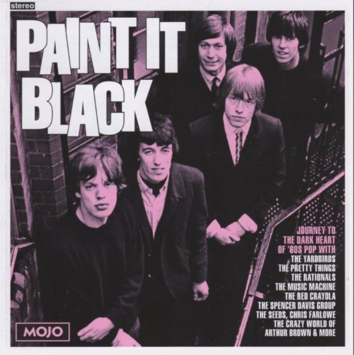
09Paint It Black
Chris Farlowe – Mojo Presents: Paint It Black (2016)
orig. The Rolling Stones
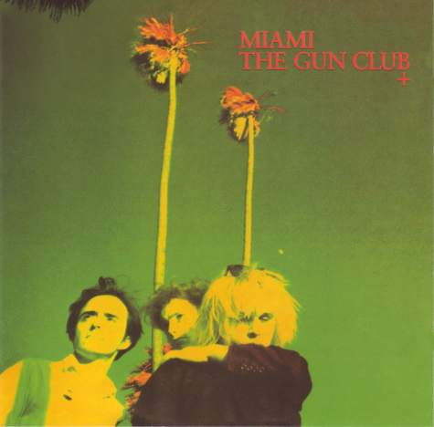
10Run Through The Jungle
The Gun Club – Miami (1982)
orig. Creedence Clearwater Revival
 11
11
Jesus
Swervedriver – Unpiecing the Jigsaw - A Tribute to The Velvet Underground (2009)
orig. The Velvet Underground
 12
12
What Goes On
Screaming Trees – Fifteen Minutes - A Tribute To The Velvet Underground (1994)
orig. The Velvet Underground
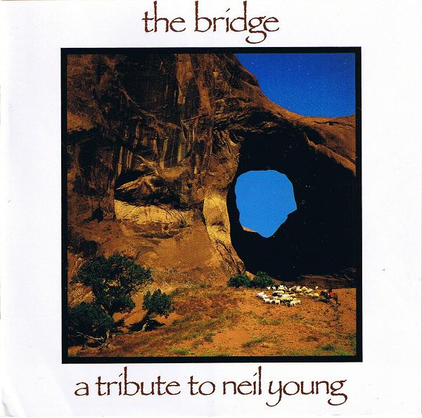
13Lotta Love
Dinosaur Jr. – The Bridge - A Tribute To Neil Young (1989)
orig. Neil Young
 14
14
Head On
Pixies – Trompe le Monde (1991)
orig. The Jesus and Mary Chain
 15
15
Gruesome Castle
Wild Nothing – Gruesome Flowers: A Tribute to the Wake (2011)
orig. The Wake
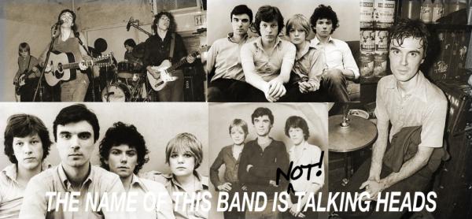
16Heaven
Voxtrot – The Name of This Band Is Not Talking Heads (2006)
orig. Talking Heads
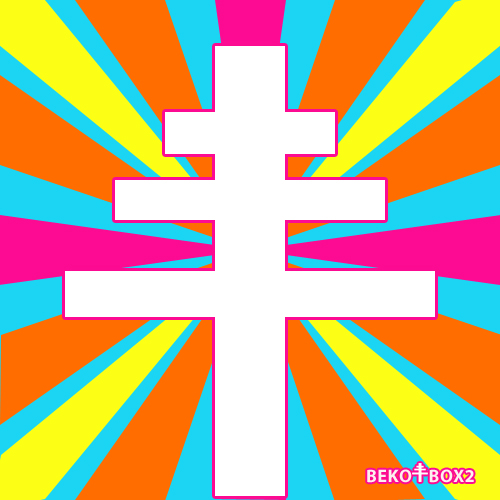
17No Fun
The Feeling Of Love – beko_BOX2_3 (2010)
orig. Iggy Pop & the Stooges
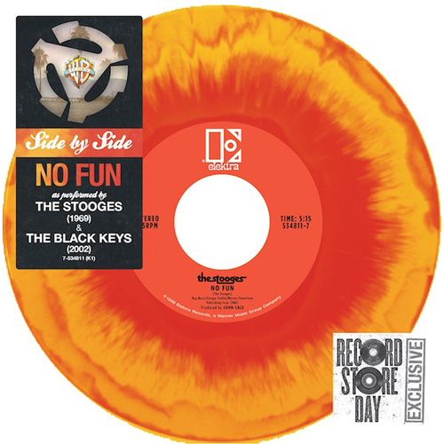
18No Fun (Live)
The Black Keys – Side By Side - No Fun (7'') (2013)
orig. Iggy Pop & the Stooges
 19
19
Janie Jones
Babyshambles – Janie Jones: Strummerville (2006)
orig. Strummer / The Clash
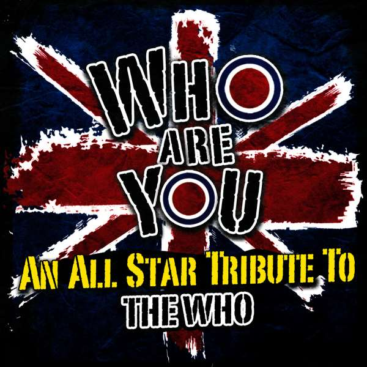
20The Kids Are Alright
The Raveonettes – Who Are You - An All-Star Tribute to the Who (2012)
orig. The Who
 21
21
The Passenger
The Cambodian Space Project – Angkor Pop! A Cambodian Tribute to Iggy Pop (2019)
orig. Iggy Pop
 22
22
Sympathy for the Devil
The KVB – Stoned - A Psych Tribute to the Rolling Stones (2015)
orig. Rolling Stones
 23
23
Running Up That Hill
Placebo – Covers (2003)
orig. Kate Bush
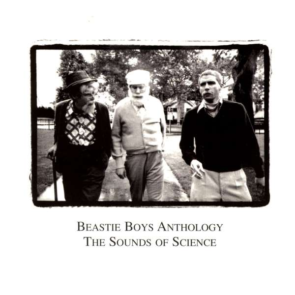
24Benny And The Jets
Beastie Boys – Anthology: The Sounds Of Science (1999)
orig. Elton John